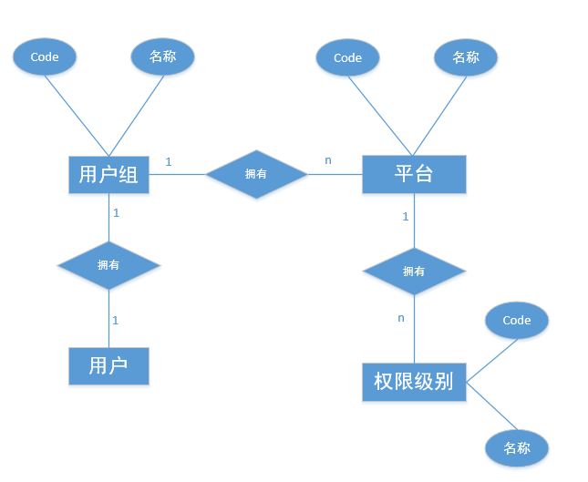
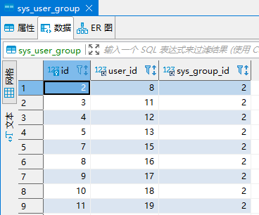
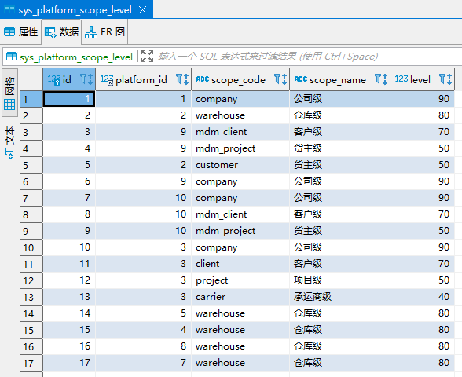
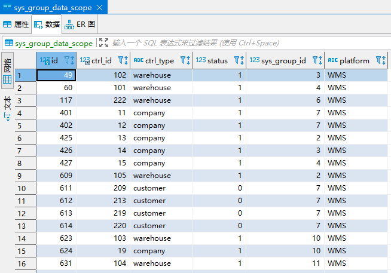
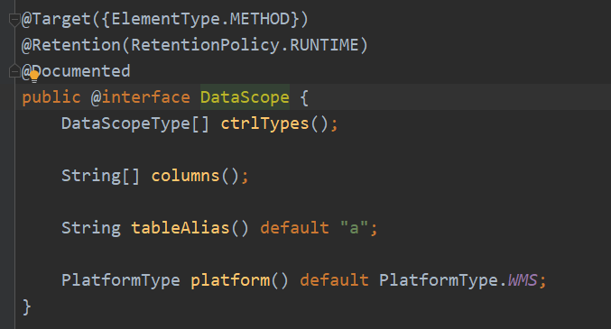
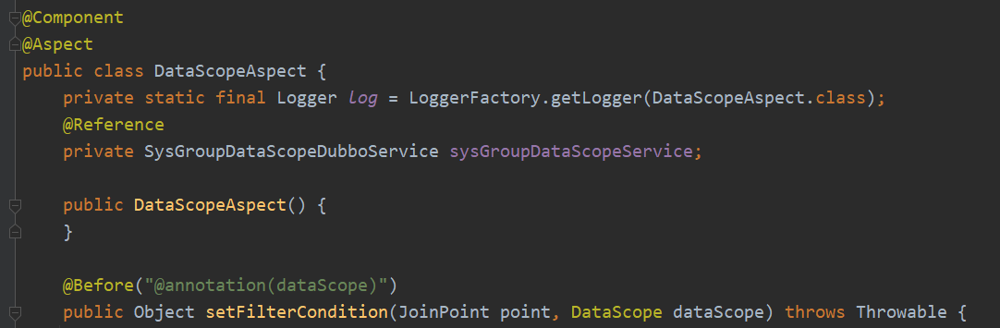
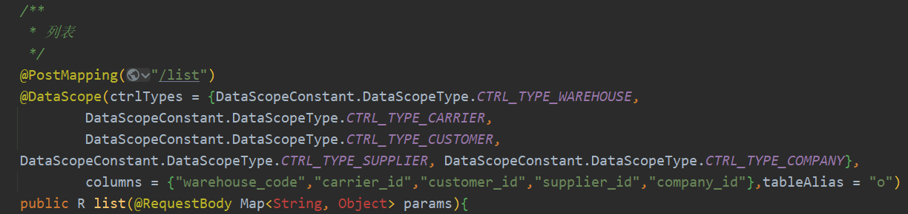
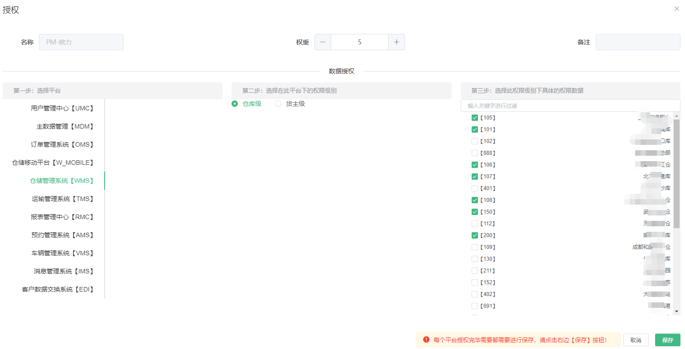

系统平台数据权限设计总结
前言
本文主要讲解数据权限的设计，当然整个设计的思想核心还是围绕WMS、OMS、TMS系统，这里我们就不在阐述这三者系统是什么？是用来干什么的了，不清楚的小伙伴就自行百度吧。
先来简单描述一下什么是数据权限?
数据权限是控制哪些人能看到哪些数据的一种技术方案。可以从字面意思上理解：数据、权和限：通过授权来限制某个人或者某个事物能够看到或者访问某些数据。
举个例子：（例子只和本文的内容有关，不代表全部场景）
| A列 | B列 |
|---|---|
| 1 | 1 |
| 2 | 2 |
现在有一个表格数据，如上。我们现在要求 用户A1 只能看到A列 = 1 的行，用户A2 只能看到A列 = 2 的行，我们通过数据权限的技术实现后，将会呈现以下效果：
用户A1看到的表格会变成：
| A列 | B列 |
|---|---|
| 1 | 1 |
用户A2看到的表格会变成：
| A列 | B列 |
|---|---|
| 2 | 2 |
不同的对象看到同一个表格的不同数据，这就是数据权限要解决的问题。
以上纯属自己理解，如有不对，请吐槽。
现状
数据权限的设计方式有很多种，但是相信大家肯定还是要结合自身的实际业务情况去做系统设计。
目前整个平台的现状主要是分公司、仓库、客户、货主、承运商、供应商这6种对象，但是真正使用系统的对象主要是公司、仓库和货主。
其实需求很简单，需要实现不同的人进入系统能够看到不同的数据：订单、库存、产品等。
但是当我们结合自身系统的实际情况来看的话，就会变成：需要有一套数据权限控制模块来整体管理WMS、TMS和OMS这套系统，这样的话问题就变的复杂了。
因为我们现在的系统WMS、TMS、OMS业务数据都是分开的，按理来说数据权限是可以分开做的，但是我们毕竟是Saas服务，虽然数据是分开的，但是整个平台是一个整体，并且他们的用户角色管理都是一套数据，如果做三套数据权限那未免有点违背了这个平台的概念。
设计方案
其实现在的数据权限模块已经上线使用了很久了，但是在这最后一版前面我们前后已经改了3-4次了（具体次数记不得了）。
因为我们的系统是从0开始的，并且还是从单体应用做起，那时候只有一个WMS，后来才改造成了微服务架构，并且随着公司的发展，系统数量也慢慢增加，有了TMS和OMS。不过如果按照我们自己的叫法还可以分为：MDM、OMS、WMS、TMS、AMS、UMC这六大系统。
而本次主要就是围绕UMC（用户管理中心 User Management Center）进行展示，它是管理整个平台的用户信息，其中则就是包含了数据权限这一部分。
上述原因就是为什么这一块东西会前后改了这么多次的原因，初创公司再加上系统也是从0开始开发，并且公司是做仓储业务的，前期业务形态也不稳定，很难标准化，导致权限这一块也一直跟着调整适应公司的组织结构和业务发展。
废话说够了，进入正题…
数据库
直接上图吧。

你可能会说，咋就突然图就出来了？也不分析一下，构思一下？
额…这就是分析和构思之后的结果，原因有下：
1、把数据权限就理解成为用户角色的菜单权限即可，那么我们就可以得出来一个和用户角色平级的一个东西：用户组（也可以叫：数据权限组，无所谓了）
2、因为我们现在有很多平台：MDM、WMS等等，而每个平台都有自己的特点，尽管都是自己开发但是业务场景不同，需要处理的权限也肯定不同，那么我们就需要把这些规则按照平台的概念将其拆分开来，使其更加灵活
3、还是要在平台的概念下再进行细分，从现在系统的现状能抽象出来几种用户的身份：公司级、仓库级、客户级、货主级等等，而这些就是控制系统数据的关键因素
要问我为什么能得出来这样的结论，那我也不知道怎么回答…可能还是对业务场景和系统理解的比较透彻吧，毕竟本身就是做开发出身的。
既然提到了开发，那就顺便说一句题外话，这一块的设计还真离不开自己的开发经验，这样的设计方案是完全建立在自己懂开发的基础上实现的，如果自己不懂开发的话，设计出来的东西就不知道能不能实现了。
其实经过上述的思考，相信熟悉数据库表设计的小伙伴了，脑海里已经有表结构了，结合ER图和他们之间的关系，我们能够得出以下表结构：

我们来看一下上述图片的表关系：
1、每个用户都拥有一个用户组

2、每个平台都拥有自己支持权限级别

3、每个用户组都拥有自己在某个平台下面控制的权限列表 ，其中ctrl_id是控制维度的唯一标识例如主键ID，ctrl_type对应的是这个主键ID是什么类型，可以理解为要控制哪一个字段

现在来看这些表结构比较抽象，因为不知道怎么来使用，下面我们结合程序设计再来详细看一下具体的使用方法。
程序
思考
其实吧，程序和表结构的设计是息息相关的，如果非要说谁先谁后的话，以我个人考虑问题的习惯还是会先考虑程序架构如何去实现，然后再去考虑什么样的表结构设计才能满足这个程序架构。
算了，这都不重要，只要能说明整个设计思路就好了，毕竟这篇文章主要是给大家讲明白整个的设计方案。
在做这个数据权限设计之前，我自己首先是想到了一种方式，就像文章最开始我举得例子，要想控制哪个人能看到哪一行数据，一种方案就是从表字段入手（有没有其他方式我也不知道），我只要能控制每个账号登录进来，让他可以根据每个表的字段来进行筛选，就好比是筛选条件一样，用户A按照A字段进行筛选，得出一批数据；用户B按照B字段进行筛选，得出一批数据。通过这样的效果来进行数据过滤。
好了，现在我们有了一个大体的方向了，接下来就是要在此基础上进行扩展使其更加灵活和满足业务的实际场景。
想一下，用户A只能通过A字段来筛选吗？是不是也可以按照B字段来筛选？同样道理，用户B是不是也可以按照A字段来筛选。答案当然是：是。
那么我们就需要有一个灵活的配置，来解决不同的人能够支持按照不同的字段来进行限制。
我们再回到上面表设计这一块，上面提到了ctrl_type就代表了要控制的哪一个字段，ctrl_id是具体的数据标识，整合一下，ctrl_type = A/B字段，ctrl_id = 筛选条件，用户A/B就是通过用户组进行关联起来，来取各自的ctrl_type和ctrl_id。
我们还要进行扩展，结合自身系统的特点，我们是有很多个平台的，那么关于ctrl_type和ctrl_id是不是也要按照平台分开，所以我们最终才能得出sys_group_data_scope表的结构。
然后，我们把整个链路串起来：用户A有一个用户组，我们通过用户组，在sys_group_data_scope表中找到这个用户在每一个平台下面对应的控制字段和这个字段的值的列表。
这是我们把表结构和程序设计进行了关联，说明我们的表要怎么使用。
开发
我们基本把实现思路理清楚了，现在就要看这个代码如何去实现。
程序开发的基本原则不能忘记，像这种数据权限类的系统架构，我们要做到无侵入。我们是使用java开发的，那么要做到无侵入，很容易联想到我们所掌握的基本知识：AOP。AOP确实能够做到无侵入，但是具体要做什么呢？
很简单，就像上面我们说的，控制能不能看到数据就像筛选条件一样，我们只要把条件加上就可以了。
其实说白了就是数据库查询的时候把相关的条件拼上去就行了，举个例子：
select * from orders where id in (1,2,3,4)
这个语句相信大家都能看懂，我只要把 in 后面的列表换掉不同值，那么查出来的结果就是不同的行。
那么我们将这个语句再改造一下，将in后面的列表换成一个变量：
select * from orders where id in (params)
只要我们能动态的改变params，那么我们就实现了动态控制数据的功能。
我们再结合前面的想法，我们要做到的是可以按照不同的列进行控制，那么我们是不是可以这样：
select * from orders where column_params in (params)
现在我们要做的就是把column_params和params通过无侵入的方式进行动态拼接SQL，我们这里采用的具体方案是：自定义注解+前置增强。


切面内部的逻辑这里就不进行展开说明了，基本就是，通过用户查询用户组下面的数据权限sys_group_data_scope表，进行拼接SQL，ctrl_type就对应了column_params，ctrl_id就对应了params。
注解定义好了，具体的使用方法如下：

我们现在控制数据权限主要只针对表格的查询限制，我们只需要把注解@DataScope放在需要控制权限的接口上面即可。
@DataScope(ctrlTypes={支持的控制类型},columns={此查询支持控制的表字段},tableAlias=’’)
最终我们呈现给用户的界面如下：

结语
本文主要记录了整个数据权限设计的思想，当然此设计只是基于自身的业务考虑，并不能代表所有的数据权限设计方案。
具体的代码细节没有体现的太多，如果真的想搞明白底层的细节恐怕这篇文章是不行的。这里主要还是想表达一下本平台的数据权限的核心思想。